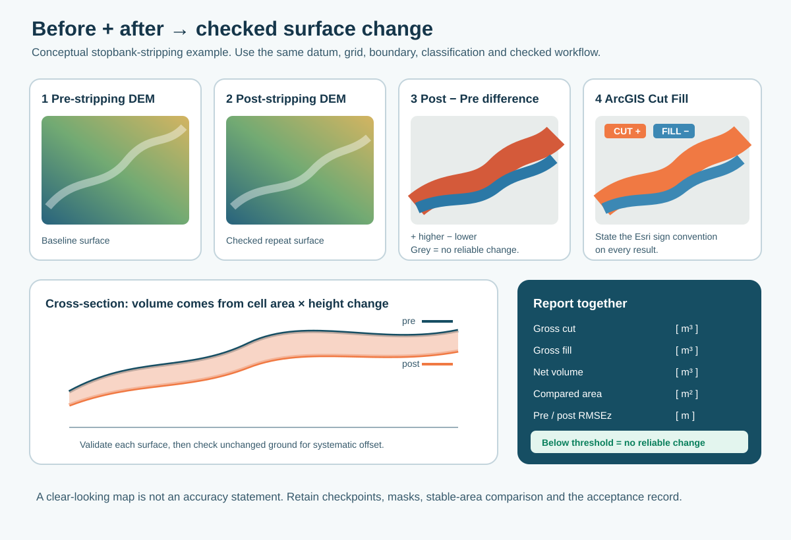

10. Surface comparison and volumes

Figure 24. Conceptual stopbank-stripping example. The reported volume comes from two checked surfaces; it is not automatically exact because the map looks detailed.
10.1 Align the surfaces first
Before any subtraction or Cut Fill calculation, the two surfaces must use:
- the same horizontal coordinate system;
- the same vertical datum and units;
- the same cell size;
- coincident cell alignment/snap raster;
- the same analysis extent and valid comparison boundary; and
- suitable, comparable ground classification.
Use Project Raster, Resample, processing extent, cell size and Snap Raster deliberately. Reprojection or resampling does not repair an incorrect height datum or poor source data.
10.2 Pre/post difference
For a simple signed elevation-change raster:
Difference = Post_DEM - Pre_DEM
- positive values mean the later surface is higher;
- negative values mean the later surface is lower; and
- values near zero may still contain measurement and surface-modelling noise.
Mask water, vegetation, moving stock/plant, edge interpolation and areas not common to both surveys before reporting change. Compare unchanged checkpoints or stable surfaces to understand the noise floor.
Validate both surfaces against independent checkpoints. A useful first estimate of the combined vertical uncertainty is:
Combined RMSEz = √(RMSEpre² + RMSEpost²)
Use a project-approved minimum detectable change so differences inside the combined noise band are reported as no reliable change, not stripping or fill. Check stable, unchanged ground for a systematic vertical offset before calculating volumes.
10.3 Cut Fill
ArcGIS Pro's Cut Fill tool compares coincident before and after surfaces and reports areas and volumes of change. In the Esri output convention:
- positive volume = cut / material removed; and
- negative volume = fill / material added.
This sign convention is different from the simple Post - Pre difference above. State the convention in every map and table so users do not reverse the result.
Report:
| Item | Record |
|---|---|
| Source surveys | Dates, aircraft/payload, processing project and accepted surface names |
| Comparison setup | CRS, vertical datum, cell size, snap raster, extent and mask |
| Result | Cut, fill, net change, area and units |
| Checks | Checkpoints/stable-area comparison and review completed |
| Limitations | Water, vegetation, incomplete coverage, changed classification or edge effects |
Use a flat design surface only when it is genuinely the approved comparison surface. Record its elevation, datum, units and boundary; never create a convenient flat raster and treat it as an as-built requirement without confirmation.
Volume sensitivity is easy to underestimate. A persistent 0.02 m vertical offset across 10,000 m² changes the calculated volume by about 200 m³. The simple area × vertical uncertainty calculation is a useful conservative sensitivity check, not a complete statistical confidence interval, because neighbouring surface cells are correlated and random errors may partly cancel.
For contractual quantities or other high-consequence decisions, use a project-specific QA method and independent validation such as rover/level cross-sections, a known test area or comparison with an accepted conventional survey. Report gross cut, gross fill, net volume, compared area, pre/post checkpoint results, stable-area offset, exclusions and the accepted use together.